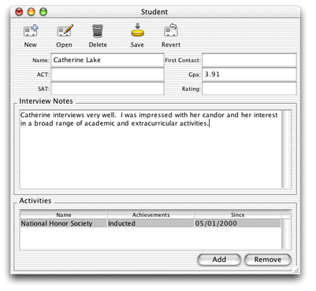
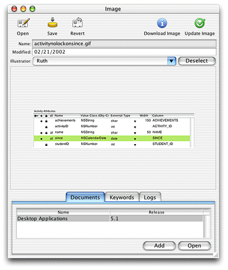

Problem: In form windows in Direct to Java Client applications, a number of actions are available to the user by default as shown in Figure 8-1. These actions are: insert, open, delete, save, and revert.You want to disable the buttons that invoke some of these actions.
Figure 8-1 Default actions in a form window
Solution: Use the rule system to override the default behavior.
The rule system provides a key to disable certain actions. By providing the names of the actions you wish to disable as the right-hand side value of this rule, those actions are disabled in all dynamically generated controllers. This and many other rules have no effect on frozen XML or frozen interface files.
*true*disabledActionNames(insertWithTask, delete)50This rule disables the insert and delete actions, which is appropriate for the application whose form window is shown in Figure 8-2.
Figure 8-2 Disabled actions in a form window
To understand how the additional buttons Download Image and Update Image are added, refer to "Task: Adding Custom Actions to Controllers".
If you're working with frozen XML components, you can remove
the ACTIONSBUTTONCONTROLLER tags
to disable the action buttons in that window. This may be too drastic
a measure for your needs, but frozen XML is by definition less flexible
than dynamically generated components, and this is one of its costs.
If you do remove the ACTIONSBUTTONCONTROLLER tags,
you can still specify custom action buttons by writing custom controller
classes and specifying them with CONTROLLER tags
in the XML. See "Using a Custom Controller Class in Frozen XML" to learn how to write and use custom controller classes.